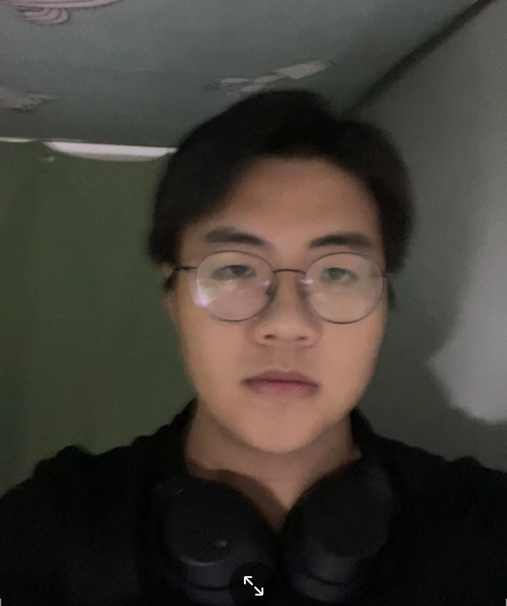

curriculum vitae

| Chinese name | English name | Address | zip code | Telephone | |
|---|---|---|---|---|---|
| Liang Anyuan | Lay | Yinzhou District, Ningbo, Zhejiang, China | 315000 | 940476142@qq.com | 18758397609 |
Article By:Lay
Educational background
I am studying in Ningbo City Vocational and technical college, studying computer application technology in the school. My average score is 73.
Personal interest
My personal interests are reading books and studying traditional culture.
Three favorite courses
My favorite courses are database construction, data collection and data analysis, and 3D modeling. In these courses, I learned a lot of computer application technology, and learned more about database, data collection and analysis. I also have a certain understanding and learning of 3D modeling, and learned a lot of knowledge.
Strengths and weaknesses
My strong point is that I have a very self-discipline work and rest. I like reading and studying in my spare time. I am serious and responsible for my study and life and like to explore new things. In your spare time, learn new knowledge and improve yourself. Be honest and trustworthy and treat people warmly. My weakness is that I am easy to be careless, slow to enter the state and anxious to do things.
Give play to advantages and overcome disadvantages
For learning and tasks, make them in advance and enter the state as soon as possible. Continue to study and research. For places that don't understand, actively inquire about information, learn and master. Carry out continuous inspection on the completed tasks. Don't worry. Complete the tasks carefully to ensure the accuracy of the tasks.